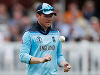
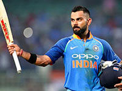

ICC CRICKET WORLD CUP
ENG
they have won the urn on 32 occasions. England have also played 743 ODIs, winning 374.[11] They have appeared in the final of the Cricket World Cup four times, winning once in 2019; they have also finished as runners-up in two ICC Champions Trophies (2004 and 2013). England have played 109 T20Is, winning 54. They won the ICC T20 World Cup in 2010, and were runners-up in 2016.
-
Captain
Joe Root,Eion Morgan -
Batsman
RH & LH Batsman -
Born
30 Dec 1990 , 10 Sep 1986 -

More impressions
A collection of images
INDIA
It has won the Cricket World Cup twice – in 1983 under the captaincy of Kapil Dev and in 2011 under the captaincy of Mahendra Singh Dhoni. After winning the 2011 World Cup, India became only the third team after West Indies and Australia to have won the World Cup more than once,[10] and the first cricket team to win the World Cup at home. It also won the 2007 ICC World Twenty20 and 2013 ICC Champions Trophy, under the captaincy of MS Dhoni. It was also the joint champions of 2002 ICC Champions Trophy, along with Sri Lanka.
-
Captain
Virat kholi -
Batshman
Right-handed Batsman -
Born
5 November 1988 -

More impressions
A collection of images

AUS
A footpath (also pedestrian way, walking trail, nature trail) is a type of thoroughfare that is intended for use only by pedestrians and not other forms of traffic such as motorized vehicles, cycles, and horses. Australia have made a record seven World Cup final appearances (1975, 1987, 1996, 1999, 2003, 2007 and 2015) and have won the World Cup a record five times in total; 1987, 1999, 2003, 2007 and 2015. Australia is the first team to appear in four consecutive World Cup finals (1996, 1999, 2003 and 2007), surpassing the old record of three consecutive World Cup appearances by the West Indies (1975, 1979 and 1983) and the first team to win 3 consecutive World Cups (1999, 2003 and 2007).
-
Captain
Aaron Finch, Tim Paine -
Batsman
Right-Handed Batsman -
Born
17 Nov 1986 , 8 Dec 1984 -
Height
1.76 m , 1.8 m
SAF
The ban remained in place until 1991 and South Africa could then play against India, Pakistan, Sri Lanka and the West Indies for the first time. The team since reinstatement has mostly been strong and has at times held number one positions in international rankings but has lacked success in organised tournaments. Outstanding players since reinstatement have included Allan Donald, Makhaya Ntini, Shaun Pollock, Jacques Kallis, Graeme Smith, Kagiso Rabada, AB de Villiers, Dale Steyn, Herschelle Gibbs, Faf du Plessis, Imran Tahir and Hashim Amla.
-
Captain
Faf du Plessis -
Batsman
Right-Handed Batsman -
Born
13 July 1984 -
Height
1.8 m